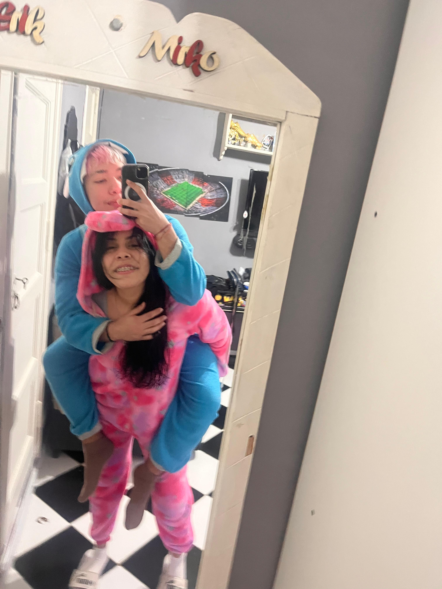
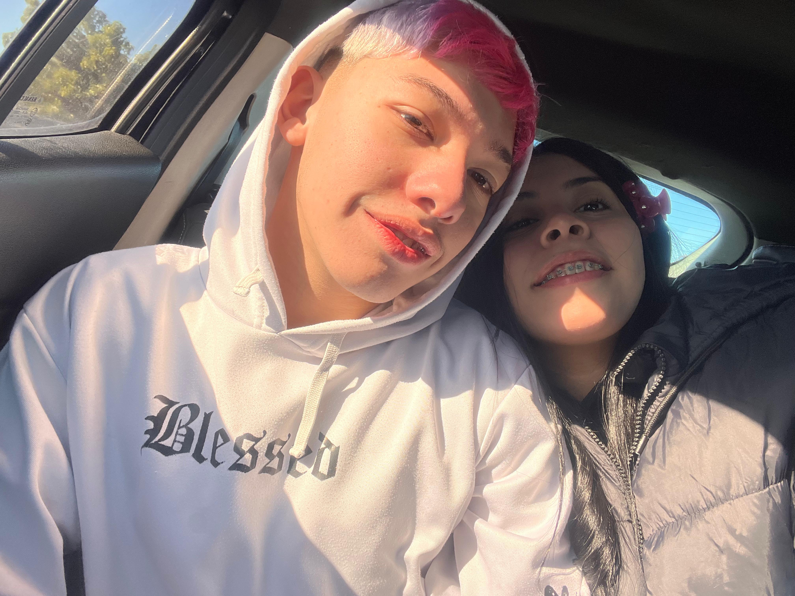
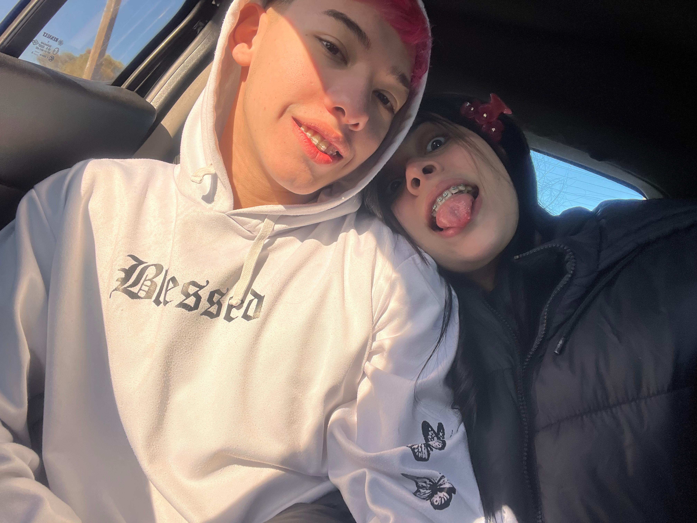

Hola mi amorcito❤️
Hola amor la verdad nose como arrancar, estaba aburrido y quería hacerte algo especial. Algo que puedas mirar cuando me extrañes, o simplemente cuando quieras sonreír. Esto es por todo el amor que te tengo y por el que me das cada dia. Quiero agradecerte por la compañera que sos, y todos los momentos lindos y graciosos que nos pasan cuando estamos juntos. Ya te lo dije la otra vez, pero te lo vuelvo a repetir gorda, no importa si capaz no hacemos nada o estamos todo el dia acostados, pero siempre pero siempre nos cagamos de risa, la pasamos bien, comemos como unas gorditas, jugamos, grabamos tiktoks, miramos alguna serie o algo, y al final del dia terminamos diciendo que rapido que paso amor, ya te extraño, y desgraciadamente tengo que decir que es verdad. Tambien tengo que reconocer que desde que volvimos a estar juntos mis dias son mas lindos y me siento al 100% acompañado por vos, y te agradezco de estar en mi vida, y ser como sos. Quiero que sepas que siempre voy a estar para vos toda mi vida, y que jamas dudes de todo el amor que te tengo porque es inmenso, escribir esto se me hace corto porque no me alcanzan las palabras pero quiero que sepas que te amo. Esto recien es la primer pagina, gracias por elegirme y darme otra oportunidad, te amo hoy y siempre.
Nuestra historia
Bueno gorda como olvidar nuestra historia y el dia que nos conocimos, jamas me imagine que otra chica del otro grado me hable y mucho menos me guste. Sabia que cuando me hablaste fue por algo, pero fue algo hermoso, gracias a dios no estuve con anto. Pero mas alla de que me hablaste por eso, desde los primeros dias ya teniamos conexion y fue hermosa y genuina. Al pasar de las llamdas cada vez teniamos mas confianza y eramos muy amigos, conectabamos muy bien, nos reiamos, teniamos charlas por horas y no nos aburriamos. Hasta que llego ese dia que te me declaraste, y cuando yo sentia que te me ibas a declarar, yo tambien lo quise hacer, porque yo lo sentia igual que vos. Y bueno despues arrancamos el colegio, muchos idas y vueltas por cosas de los dos. Llego el dia en que te pedi que seas mi novia, no me olvido mas ese dia por lo nervioso que estaba, y con el corazon en la mano rezando que no me digas que no. Tuve que esperar un mes para que sea un si, porque no te decias, hasta que revisaste mi celu y te diste cuenta de todo lo que te amaba por las cosas que tenia en el celu. La verdad que durante toda nuestra relacion fui muy feliz, acompñado y agradecido por tenerte a mi lado. Hasta que llego el dia que me partio el corazon dejarte, con todo el amor que te tenia. Pero estoy seguro que estuve en lo correcto mas alla del dolor que pasamos los dos, porque nos sirvio a ambos para darnos cuenta de muchas cosas. Y cuando te volvi hablar despues de pensar devuelta todo si queria volver con vos no dude jamas, no dudes que te amo siempre, y que soy muy feliz a tu lado.
Algunas fotos nuestras üì∏
Recuerdos hermosos üíï
 Momentos inolvidables üí´